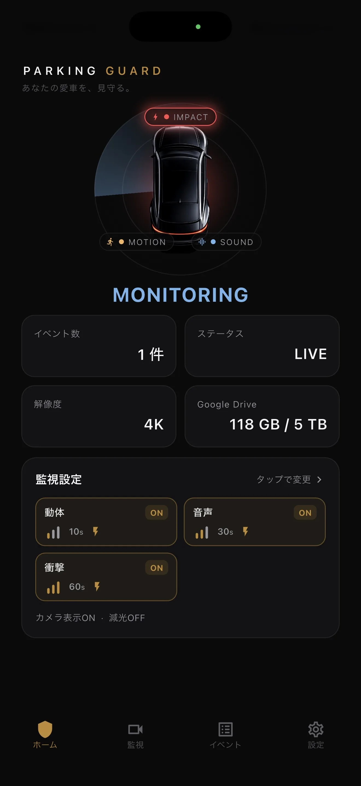

傷んだバッテリーを使わない
膨張、画面や背面の浮き、不安定な充電、異常な発熱がある場合は使用を中止します。
端末・車・乗員の安全を優先
直射日光が当たる駐車車両の車内は、電子機器にとって厳しい環境になり得ます。余ったスマホのカメラは、点検しながら一時的に使う設置として扱い、長時間そのまま任せられる常設機器とは考えません。端末状態、温度、電源、固定、空き容量、外から見えることまでを、監視を始めるか中止するかの判断に含めます。
更新日:

膨張、画面や背面の浮き、不安定な充電、異常な発熱がある場合は使用を中止します。
日陰や換気の条件は変わります。端末に適さない熱さが見込まれるなら、録画より取り外しを優先します。
外がよく映る位置は、外からスマホが見える場合もあります。その駐車場所で残すことが適切かを考えます。
バッテリーの膨張、画面や背面カバーの浮き、ケーブルや端子の損傷、水濡れ、繰り返す電源断、充電エラー、通常利用でも起こる異常な発熱を確認します。膨らんだケースを押して閉じたり、状態の疑わしいバッテリーへ充電を続けたりしません。信頼できない端末の個人データは移し、地域の適切な修理・廃棄方法に従います。
固定前にカメラ、マイク、動きを測るセンサー、画面、保存領域が動くことを確認します。室内でも落ちる、録画が止まる端末は駐車監視に向きません。その端末でサポートされるOS更新を行い、必要に応じて通常の再起動をし、検知から保存までのテストを行います。既知の端末不良をホルダーで隠しても、安全性は上がりません。
車内温度は天候、太陽の角度、窓、内装色、換気、駐車時間で変わるため、すべての状況に共通する安全な時間は示せません。天気と実際の車内を確認し、適切な場合は日陰を選び、端末へ強い日差しが集中する位置を避けます。開始時に涼しくても、離れている間も同じ状態が続くとは限りません。
iPhoneはBlackShisaを前面表示して画面を点灯し続けるため、電力と熱の条件に含めます。Androidは権限の影響を受けるフォアグラウンドサービスを使いますが、画面の動作が違っても熱の問題がなくなるわけではありません。温度警告、予期しない画面暗転、充電停止、過度な発熱、車内環境への不安があれば監視を止め、安全に端末を外します。
正常なバッテリーから始め、予想する環境で端末が無理なく維持できる監視時間を選びます。充電する場合は、状態のよい互換機器を使い、スマホ、充電器、モバイルバッテリー、車両それぞれの説明に従います。端末や電源機器を布で覆う、熱のこもる閉じた収納へ押し込む、傷んだケーブルや緩い端子を使う、といった設置は避けます。
ケーブルはハンドル、ペダル、シフト、座席レール、ドア、エアバッグの展開経路から離して固定します。適切な知識なしに内装の裏へ通したり、車両配線を変更したりしません。充電自体も熱を加えるため、給電すれば自動的に安全で長く使えるわけではありません。安全な配線や温度に確信が持てなければ、給電しない短時間にするか監視を行いません。
人通りの多い場所では、動体、音、衝撃のイベントが増えることがあります。開始前に空き容量を確認し、終了後は動画を見直します。BlackShisaは端末内へ先に保存し、Google Driveは任意です。Driveを使っても、端末内の容量とアップロード完了を別々に確認する必要があります。容量不足、失敗したアップロード、端末へアクセスできない状態は、確認できる動画へ影響します。
端末と取り付け面に合うホルダーを使い、走行視界、操作部、センサー、送風口、エアバッグを避けます。外をよく映せる位置は、通行人からスマホが見えることがあります。録画の利点が盗難や侵入のリスクを消すことはありません。条件が不向きなら、別の駐車場所、目立ちにくく安全な角度、短い監視、専用機器、監視しない判断も候補です。
ホルダーとケーブル、バッテリー状態、温度、空き容量、画角、選択した検知後10秒・30秒・60秒を確認します。害のないテストイベントを作り、検知前3秒と想定する映像が保存されているかを開きます。Google Driveを使う場合も、バックアップを保証されたものと考えず、アカウントと通信を別に確認します。
最後にOSの状態を見ます。iPhoneはBlackShisaが前面に表示され画面点灯、Androidはフォアグラウンドサービスと必要な権限です。離れる予定時間を決め、天候や状況が変わったら判断し直します。このチェックは避けられる設定ミスを減らすものですが、端末の安全や証拠を保証するものではありません。
FAQ
余ったスマホに任せる前に知っておきたい制約も含め、要点を答えます。
すべてに共通する時間はありません。端末状態、天候、直射日光、車内、画面、充電、換気が異なります。短時間で計画し、条件が不向きなら中止してください。
互換機器、安全な配線、適切な温度を確認できる場合だけ検討します。充電は熱を加えるため、常に安全な選択とは限りません。
そうとは限りません。アップロードには設定したアカウント、通信、完了が必要です。状態を確認し、見える端末を残すリスク自体も考えてください。